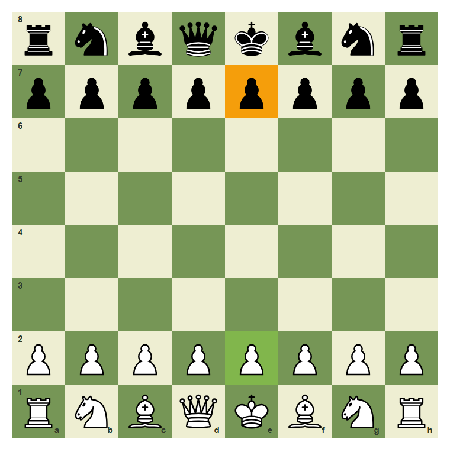
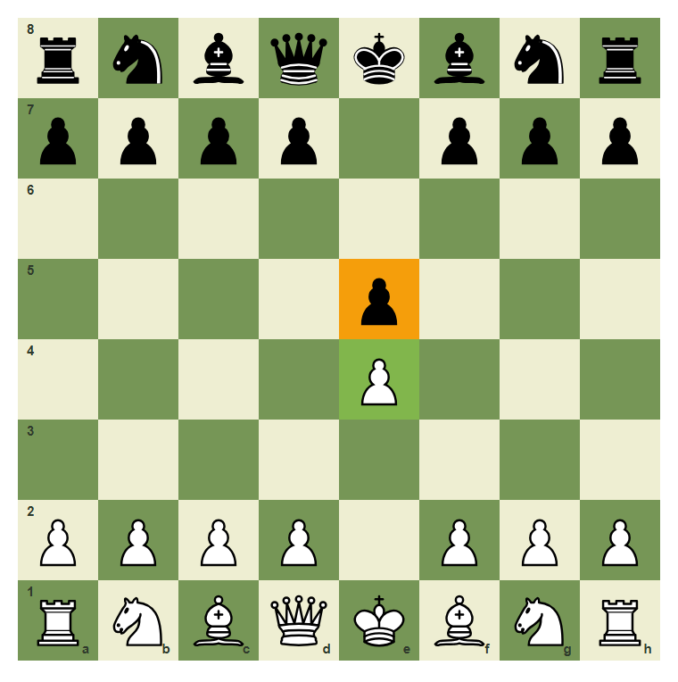
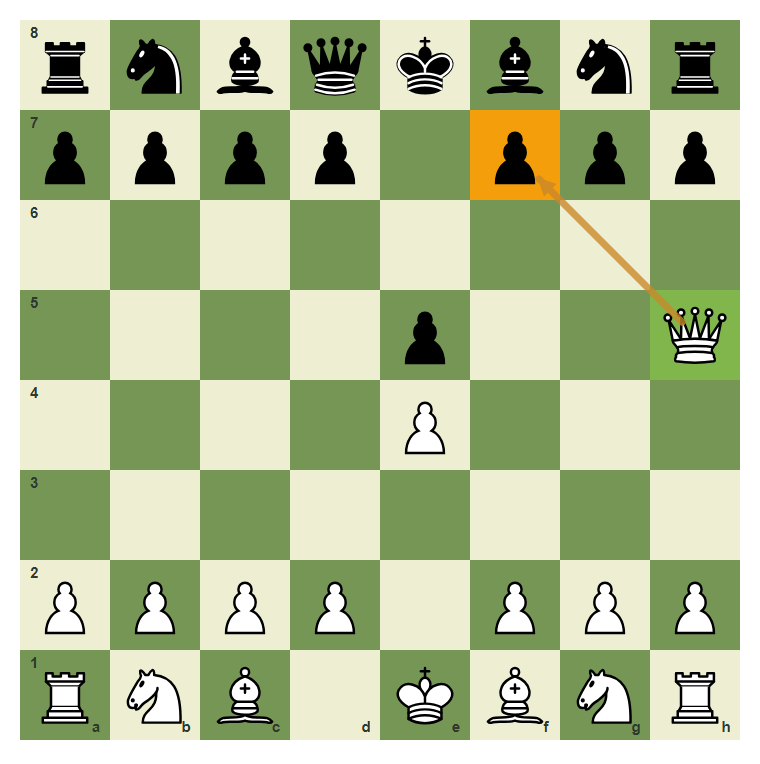
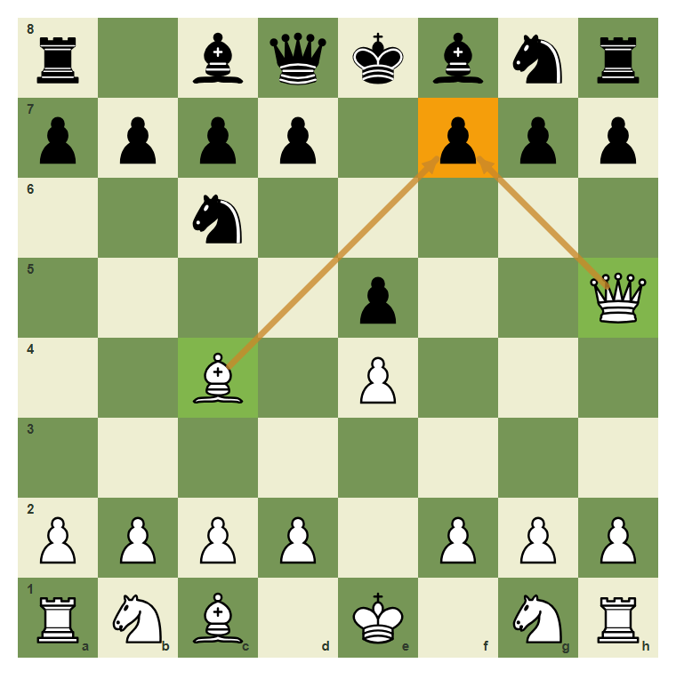
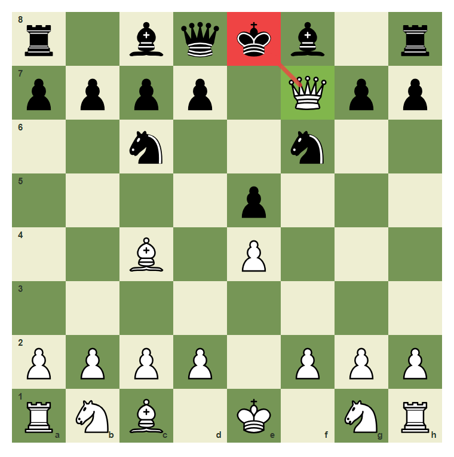
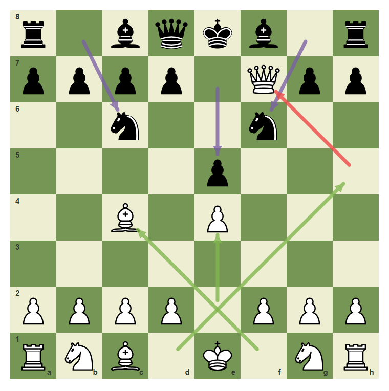
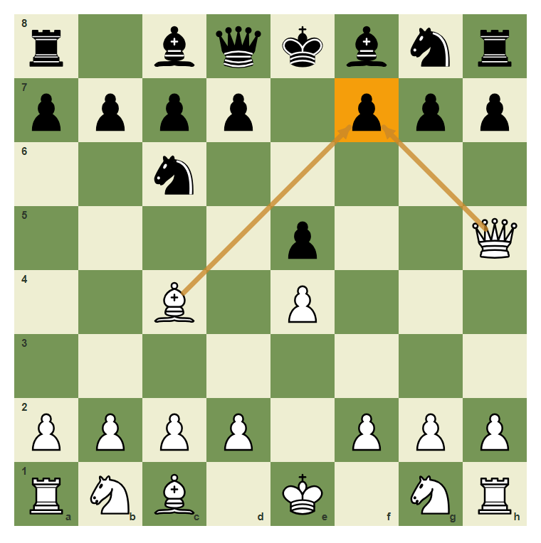

Your First Guided Game
Use the rules together in one short game.
- Play a legal opening sequence from the starting position.
- See how center control opens queen and bishop lines.
- Recognize a simple mate threat on f7.
- Complete a short guided game ending in checkmate.
A Short Legal Game
Now we connect the first rules into a real sequence. This short game is not a full opening course. Its purpose is to show how legal moves, piece lines, check, and checkmate fit together.
Start from the normal setup

The game begins from the correct starting position.
Both players claim the center

After 1.e4 e5, both center pawns stand in the middle.
Build The Mate Threat
The weak f7 square is protected only by the Black king at the start. The White queen and bishop can team up on it.
Queen eyes f7

After Qh5, the queen attacks f7.
Bishop joins the attack

The bishop on c4 and queen on h5 both point at f7.
The final mate on f7

Qxf7 is checkmate in this beginner pattern because the queen is protected and the king has no good escape.
The full guided sequence

The sequence is 1.e4 e5 2.Qh5 Nc6 3.Bc4 Nf6 4.Qxf7#.
Play the checkmate move
White to move: capture f7 with the queen.
Common Mistake
Common mistake: moving without checking threats
Black must notice the threat on f7. A move that ignores both queen and bishop pressure can allow Qxf7 mate.

Both attacking pieces point to f7. The threat should be checked before moving.
Chapter Checkpoint
What did 1.e4 open?
The move 1.e4 helps open lines for:
Which square was targeted?
In the guided game, White attacked:
What was the final move?
The final move of the guided game was: